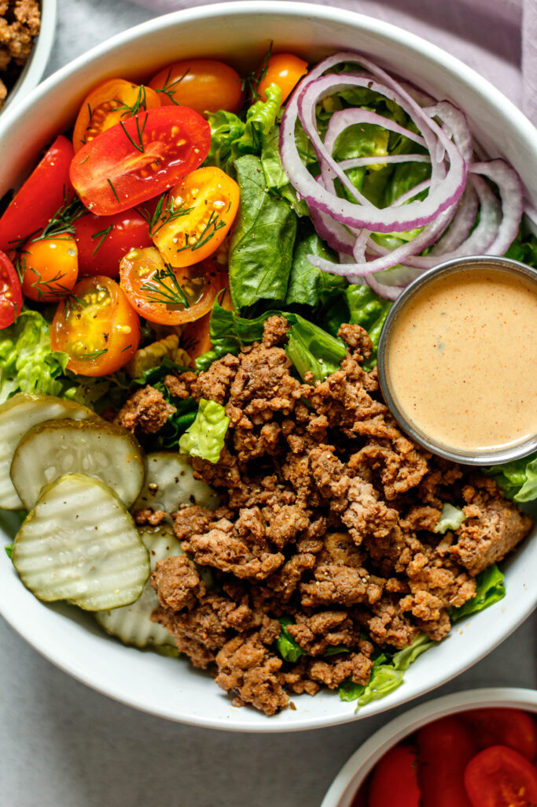

Healthy Burger Bowls with Special Sauce

Forget that they're paleo and bask in the joy of putting potatoes on a salad.
Everything but the bun! All of the ingredients come together to recreate the vibes of a burger.
Ingredients:
For the burger meat
- 1 lb ground beef
- 1/2 tsp onion powder
- 1/4 tsp dried oregano
- 1/2 tsp garlic powder
- 1/2 tsp paprika
- 1 tsp salt
- 1/4 tsp black pepper
For the salad
- Romaine lettuce
- Tomatoes
- Pickles
- Red onion
Special sauce
- 1/4 cup mayo
- 1 tbsp ketchup
- 1 tsp yellow mustard
- 1 tbsp pickle juice
- 1 tbsp chopped pickles
- 1/4 tsp garlic powder
- 1/4 tsp onion powder
- 1/2 tsp paprika
Steps:
- Heat a skillet over medium high heat. Add the ground beef and spices. Brown the beef, breaking it up as it cooks, until it is fully cooked through.
- While the beef is browning, make the special sauce. Add all of the ingredients to a small bowl and whisk together until well combined.
- Assemble your burger bowls. Start with romaine lettuce then add the toppings and cooked ground beef. Drizzle the special sauce over everything and then enjoy!